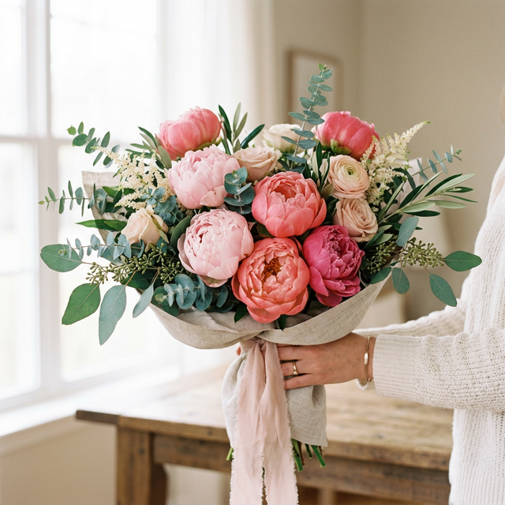
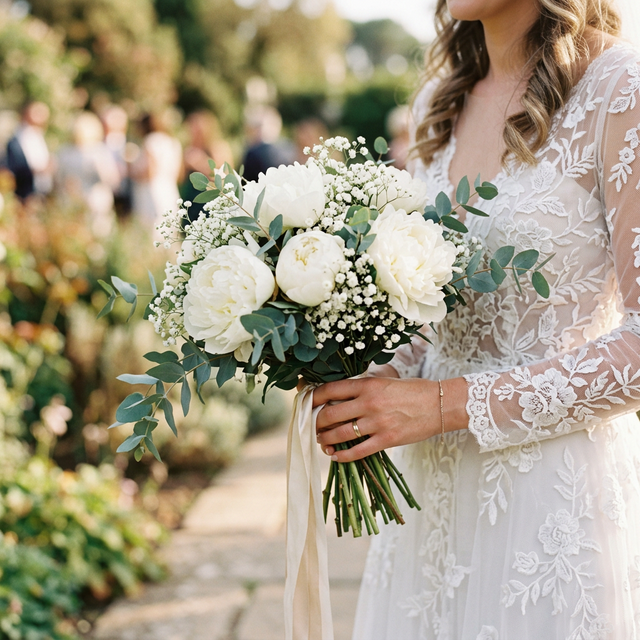
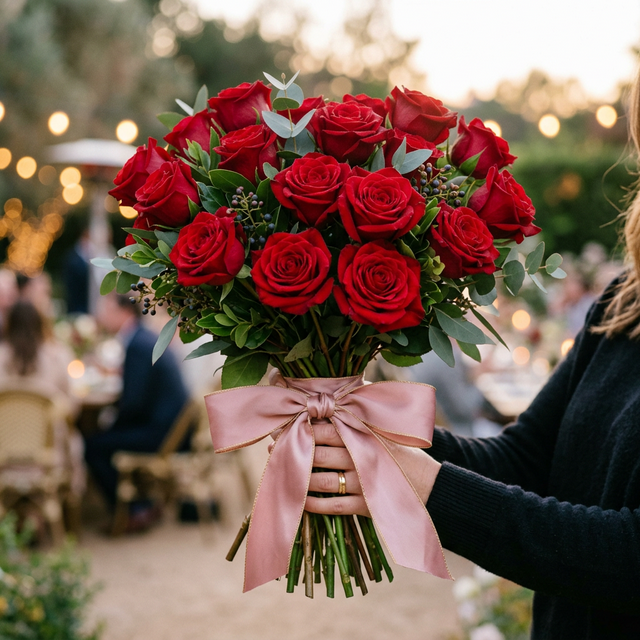
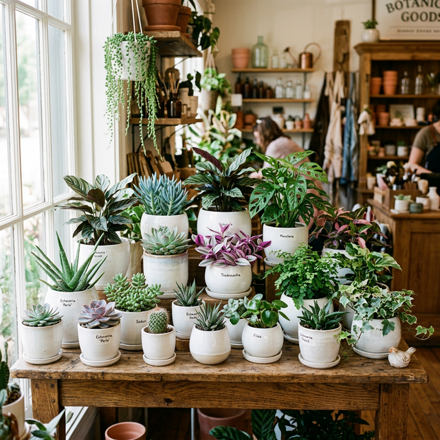
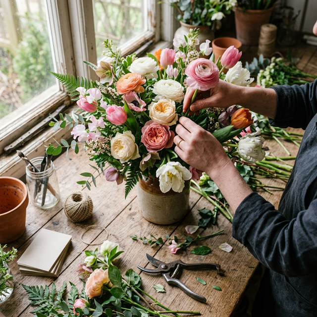
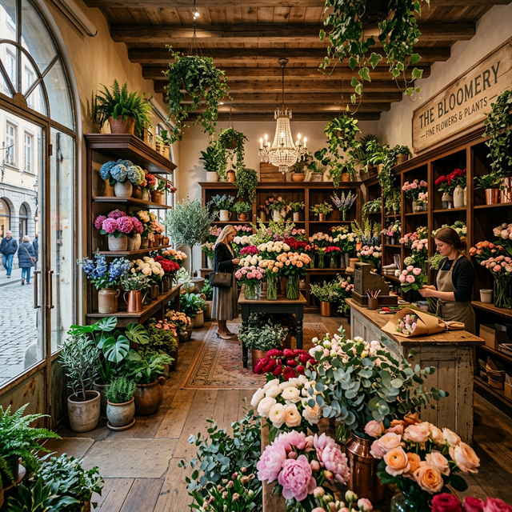

Sztuka układania
emocji
Odkryj magię świeżych kwiatów, które mówią więcej niż tysiąc słów. Stworzymy dla Ciebie niezapomniane kompozycje.
Kwiat miesiąca: Piwonia
Delikatne, wielopłatkowe piwonie to symbol luksusu i kobiecości. Dostępne teraz w wyjątkowych odcieniach różu, bieli i łososia.
Skontaktuj się
Dlaczego warto
nas wybrać?
Najwyższa Jakość
Sprowadzamy kwiaty tylko od sprawdzonych, najlepszych dostawców.
Kreatywność
Nasze kompozycje wyróżniają się unikalnym i nowoczesnym designem.
Dostawa na czas
Zapewniamy terminowe doręczenie bukietów pod wskazany adres.
Pasja i Serce
Wkładamy całe zaangażowanie w każdy, nawet najmniejszy bukiet.
Co oferujemy
Bukiety okolicznościowe
Zawsze świeże, komponowane z dbałością o każdy detal bukiety na urodziny, rocznice i inne wyjątkowe okazje.
Florystyka ślubna
Wiązanki ślubne, dekoracje sal i kościołów oraz wystrój samochodów. Sprawimy, że Ten Dzień będzie piękny.
Kwiaty doniczkowe
Bogaty wybór roślin domowych i tarasowych, porady w pielęgnacji oraz eleganckie donice i osłonki.
Jak zamówić
kwiaty?
Skontaktuj się
Zadzwoń do nas lub odwiedź sklep. Opowiedz nam o okazji, preferencjach kolorystycznych i budżecie.
Tworzymy razem
Nasz florystka dobiera kwiaty i komponuje bukiet według Twoich życzeń. Dbamy o każdy detal.
Odbierz lub dostawa
Gotowy bukiet możesz odebrać osobiście lub zamówić dostawę pod wskazany adres tego samego dnia.
Realizujemy zamówienia ekspresowe — zadzwoń nawet godzinę przed!
📞 Zadzwoń teraz: 999 111 222Nasze realizacje





Co mówią nasi klienci
Wspaniała kwiaciarnia! Zamówiłam bukiet na rocznicę dla rodziców i byli zachwyceni. Kwiaty utrzymywały świeżość przez ponad tydzień. Na pewno tu wrócę.
Profesjonalne podejście i ogromne wyczucie smaku. Dekoracje weselne przeszły nasze najśmielsze oczekiwania. Dziękujemy z całego serca!
Zawsze świeże kwiaty i niesamowite kompozycje, których nie znajdzie się nigdzie indziej w mieście. Obsługa zawsze uśmiechnięta i chętna do pomocy.